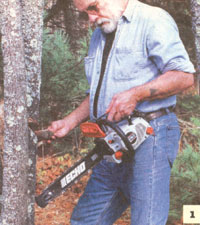
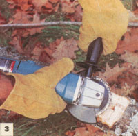
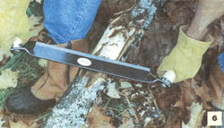
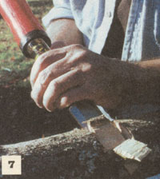

Most tools needed to build a pergola, small gazebo, or other rustic structure using timbers of well under 12" in diameter are a mix of those employed in wood-working, brush clearing, and log cabin building. In rough lengths, these small logs seldom reach 100 lbs. This is in contrast to building with full-sized logs, which require heavy-duty felling and bucking gear, a horse or tractor to skid them out of the woods, and mechanical equipment or a large work crew with logger's equipment to lift and manipulate them.
You can get small trees down with an ax or bucksaw the way even the largest timber was hand-felled till the middle of this century. Much easier is to use a chain saw. But you don't need a great, roaring 20 lb., 5 cu. in. felling saw that can cost the better part of $500. I use an Echo 3400, a 7 lb., 1.8 cu. in. saw used by arborists or "tree surgeons" who climb around in lawn trees and appreciate its light-weight, brisk power, and easy "in hand" starts. It's great for light clearing work, and for topping and limbing in the woods, but lacks the oomph to cut log-sized firewood. At $250 or so, it is more saw than you need for a single small log project. I also have a 3.5 hp electric saw trade-named Remington that cost under $50 at a local hardware store, though you can pay almost $200 for much the same machine with a better-known woodworking name. It cuts slower than the Echo and requires 110V AC power and a long, outdoor extension cord. But if kept sharp, it will do the work and do it more safely than a gas saw. The chain out at the tip of an electric saw can bind in a cut, forcing the cutting bar sharply up and back toward the operator. But the electric motor lacks the power of a gas engine and this "kickback" poses less of a hazard. Indeed, even a novice can use the tip of an electric for milling, shaping, and carving out notches in small logs- a practice that is not recommended using a gas-powered saw.
To coax a small tree to fall where you want it, you don't need any more than a long rope or two. Tie one end as high up the trunk as you can reach. Put tension on it in the direction you want the tree to fall and cinch the free end around another tree or to a well-set stake. I run the rope between tines of a garden fork, cinch it tight and sink the tines to the hilt in the soil. If a small tree gets stuck half-way down you can usually pull it down by hanging on the rope.
Round logs want to roll and you need something to hold them securely for shaping and trimming. My favorite "tool" for this is a forked tree or a pair of forked trees. Logs can be jammed into the crotch of the fork(s) and immobilized. Lacking forks, you can fasten a board at your working height between two close-growing trees, place the short end of the log on the board and angle the long end off sharply till you exert tension on it. A stake will hold it firmly in place.
Equally effective at even the most remote location is a Black & Decker WorkMate or other brand of portable work bench with a built-in table vise. Mine folds flat for easy storage and transport, and has folding legs
From felling to finish work, shaping logs the way you want them. that open to provide a choice of two working heights. Using dogs or holddowns that fit into holes in the 24" long table clamp, it will hold logs to 12" in diameter and will hold them level when used in conjunction with a folding sawhorse or two to hold the other end of the log.
From Bailey's, as well, is the milling combo I use to shape logs. The power tool is a Makita 4 1/2" electric angle grinder with a side handle so you can hold it securely with both hands. The head is a small circle of chainsaw cutters held between a pair of circular steel plates. Called a Lancelot, it's one of a line of high-speed cutting tools made by King Arthur Tools for log carving, boat building, and other uses requiring fast but precise removal of small amounts of wood in intricate shapes. This tool is a small, hairy beast; it can bind and throw itself off the work, and must be controlled firmly by an alert operator. Before using the Lancelot, the grinder's safety guard must be revolved 45° to expose the left side of the cutting edge, according to the very clear directions.
I've had quibbles in the past with Makita's often complex switch mechanisms. Their 4 1/2" anglegrinder has the requisite "deadman's" switch, but not the type that requires constant spring-resisted pressure to operate. It turns on reluctantly, but is spring-balanced so it will stay on with just the slightest pressure of a normally-placed lefthand operating grip. It turns itself off the instant that pressure is removed. It's complex but greatly reduces operator fatigue while providing auto-off safety.
Also from Bailey's is my logger's "tin hat," ANSI-certified and made of aluminum with self-adjusting webbing that makes it comfortable enough to wear all day. It's the "McDonald T" made by Mine Safety Appliances Co. of Pittsburgh for another trade that needs day-long head protection. If anyone tells you that "real loggers don't wear hard hats" you can tell them they used to say that about pro hockey players, too.
Any time you are working timber, wear a hard hat; even a small tree can dislodge a dead limb-called a "widowmaker" for good reason-from a larger tree. Always look up as a tree comes down. Also, be sure to wear eye and ear protection, tough outer clothing, and steel-toed boots when working in the woods, even when felling little pergola-sized trees.
To dig a few postholes you don't need a powered posthole auger. I have a clamshell posthole digger I found at the local Sears Roebuck. It has fiberglass handles-well worth the added $10 in cost above a $35 wood-handled model. In our notoriously rocky and undiggable New England soil, even small-scale excavation puts more strain on a tool than common wooden handles can take for long. If left out in the rain more than once, handles of posthole diggers rot out unseen inside the sockets at the top of the steel "clamshell" halves. I also use a square-ended garden spade and garden fork by the British toolmaker Spear & Jackson, sold by Johnny's Selected Seeds of Albion, Maine. These have steel strapping extending half way up the wooden D-grip handles and a no-stick coating on the steel. At about $35 apiece, they are not cheap, but are handsome and tough.
To extract really large rocks, or move logs or anything else that's reluctant to budge, I found a 6' long steel pry bar in Bailey's mail-order logger's supply catalog (see Sources at article end). It's a heavy item to ship from their California store to New England, but I've been looking for one in this size since the 1960s.
For quick cuts in small logs, nothing can beat a bow saw with coarse-cutting blades of Swedish steel. Sandvick is a European firm that makes bow-frames and blades in several sizes plus a line of all-steel limbloppers, and other brush-clearing devices for removing limbs and tops in the woods. You can trust the Sandvick name if buying by mail and can't miss their retail displays: the tools are painted a vivid orange color.
The blades are scalpel-sharp, spring-steel flexible, and too hard and brittle to resharpen. But they're cheap to replace. And, like hacksaw blades, the steel can be annealed (de-tempered and softened) with a propane torch, then drilled, ground down, and bent into matchless hidescrapers (for example) or modified for dozens of other uses around the country place.
Hand tools needed to shape joints are at the large end of the woodworker's tool kit or the small end of the log-house builder's. You'll want a large wood chisel or a set: 1", 1 1/2", and 2" wide wood flat chisels and a right-angle gouge are essential for making clean edges in joints. Stanley, with its giveaway clear-yellow, black-tipped handles, is the most generally available brand, and no tools made are better or more reasonably priced. Some off-brands are sold as "log-building tools" at an unjustified premium price.
Get a mallet to bang on wood chisels. Dead-blow mallets of plastic, loaded with shot, can be had for around ten bucks, and they are easier on the tools than a hammer.
To remove bark on larger trunks you can get a bark spud, a giant steel chisel with a yard-or-longer wood handle. For small trunks, a large drawknife is better. It will also shave down the wood to make tenons or flatten faces for joints. I'm an admitted fan of old-line ax maker Snow & Nealley of Bangor, Maine. Their 13 1/2" drawknife is heavy enough to do the work, but not overweight. Available from Bailey's and the mail-order tools catalogs, it has light-weight, good-gripping wood handles and a replaceable blade of easily-sharpened mild tool steel. Snow & Nealley also make the 3-piece set of long-handled garden tools, available at retail and from some mail-order tool and homesteaders' supply houses, that I used to dig around roots in our gazebo's post holes.
To fasten your rustic structures securely you will need a selection of powerful drills and long drill bits. An old-fashioned brace with a selection of large wood augers is most elegant, but slow. Faster is to use a line-powered or cordless drill/driver with augers, spade, or speed bits. You will need bits the size of the shank of your screw fasteners for pilot holes. For lag screws you'll also need a long-shank bit that will drill a hole wide enough to accept a rate bit extension and a 1/2", 3/8", or 5/8" socket. This means you'll need to locate 3/4" or 1" wide bits that are long enough to reach through your posts. Spade bits are a last choice. Hand-augers are best and speed bits sec ond best. Those bit-extensions sold in the catalogs are OK for one-time use, but they wobble and the little set-screw joints get dull too quickly for serious use. No really large bits are sold in your local mall store's hardware department. Look at a logbuilders supply outlet or one of the big mail-order tool merchandisers. A brace and auger bit set will cost around $200 and the big speed bits cost the better part of $50 apiece.
Especially if you invest in extra batteries, cordless tools offer an hour or two of moderate electric power at a remote building site. But for sustained power, you'll need a long, heavy-duty outdoor extension cord and a handy source of 110V AC horsepower-or a portable AC generator. Most convenient is to install an DC-to-AC inverter in your truck; the JC Whitney catalog sells a full line. You do need to keep the vehicle running while using the power, however.
For about the same cost as a hi-capacity inverter you can buy a gas-powered electric generator. See the Northern catalog for a wide variety by mail at discount prices. Be sure you get one with enough output to run your tools with amps to spare.
Bailey's (logger's supplies) 1-800-3224539
TASCO Corp. (head, face, and ear protection gear)1-800-3432311.
Cumberland General Store 1-800-334 4640
Harbor Freight Tools 1-800-423-2567
King Arthur Tools 1-800-942-1300
Lehman's Non-Electric Catalog 330 8575757
A.M. Leonard 1-800-543-8955
Northern 1-800-533-554;
JC Whitney 312-431-6102
|
 |
|
 |
|
|
 |
 |
|
|
|
|